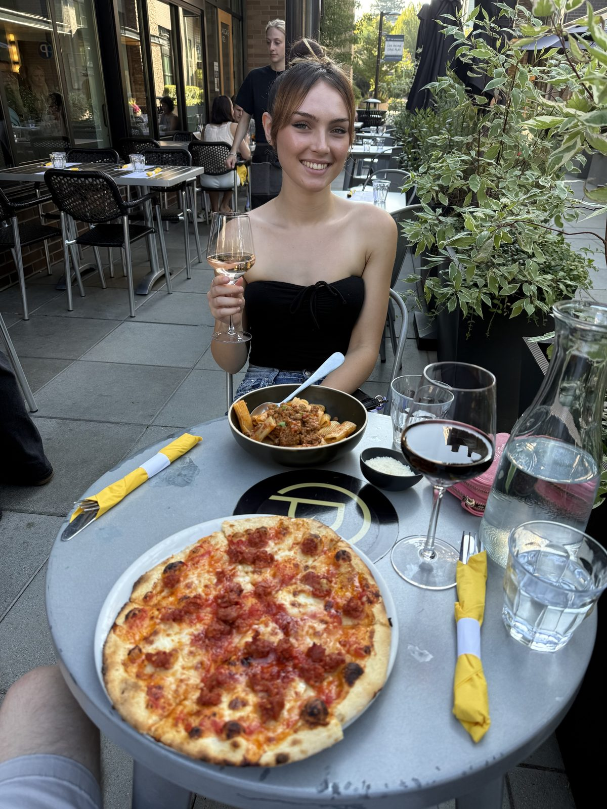
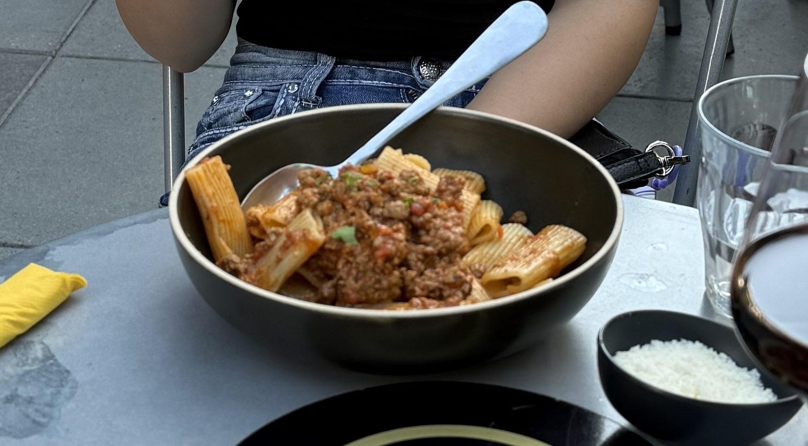
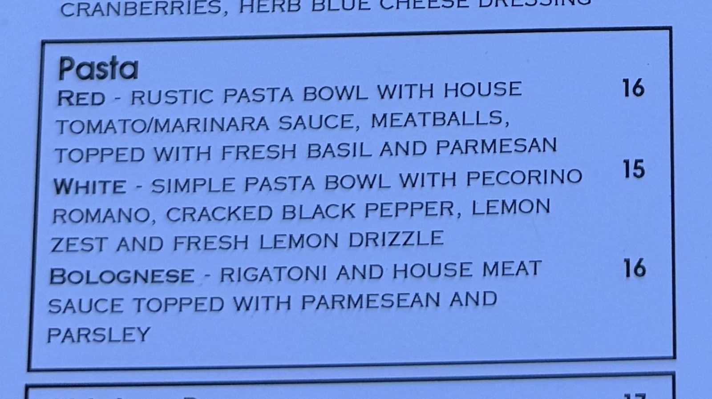
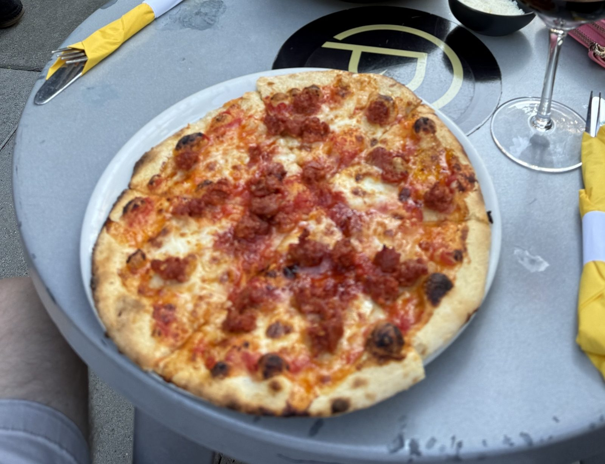
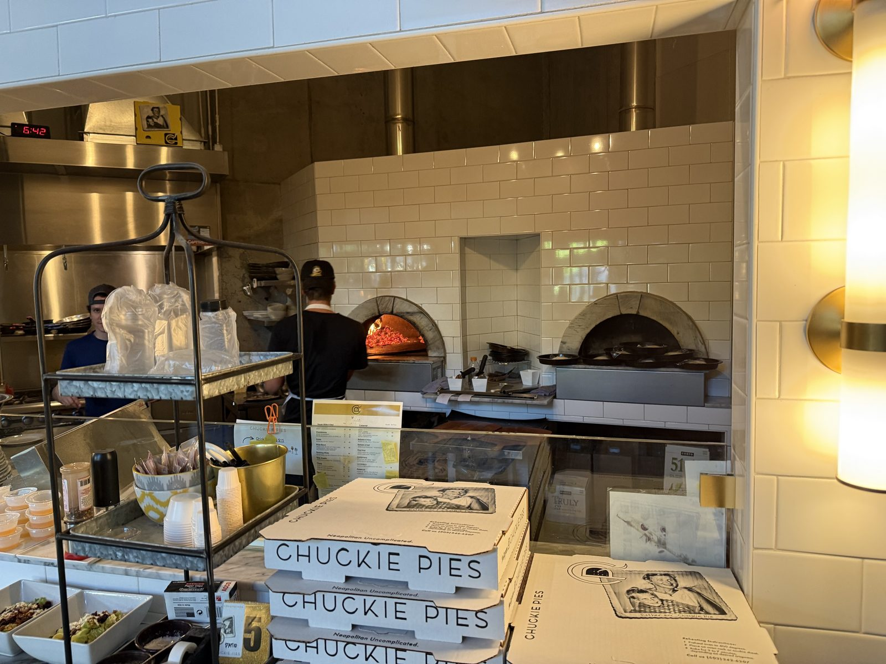
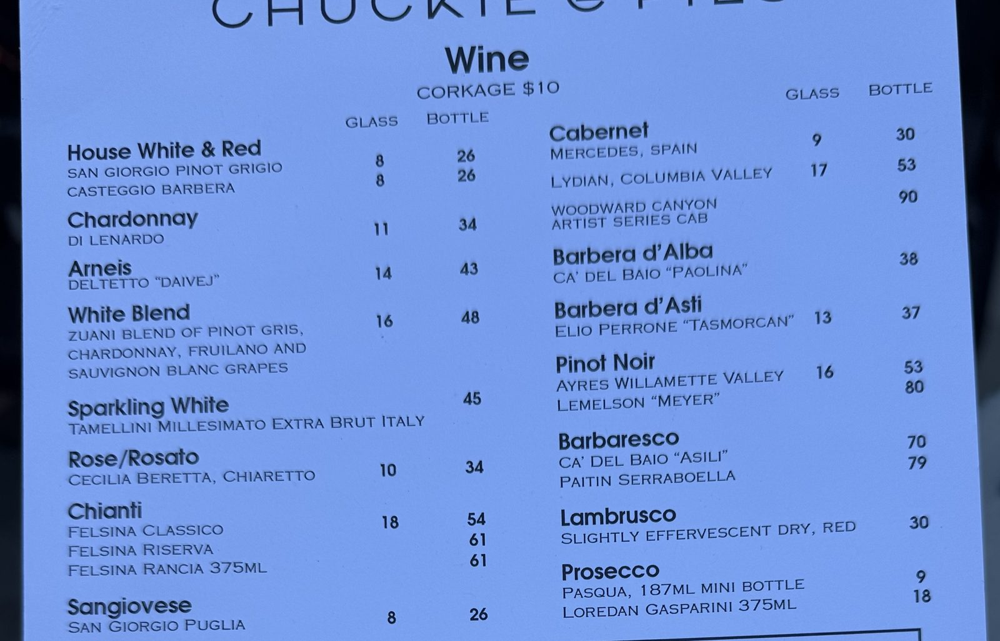
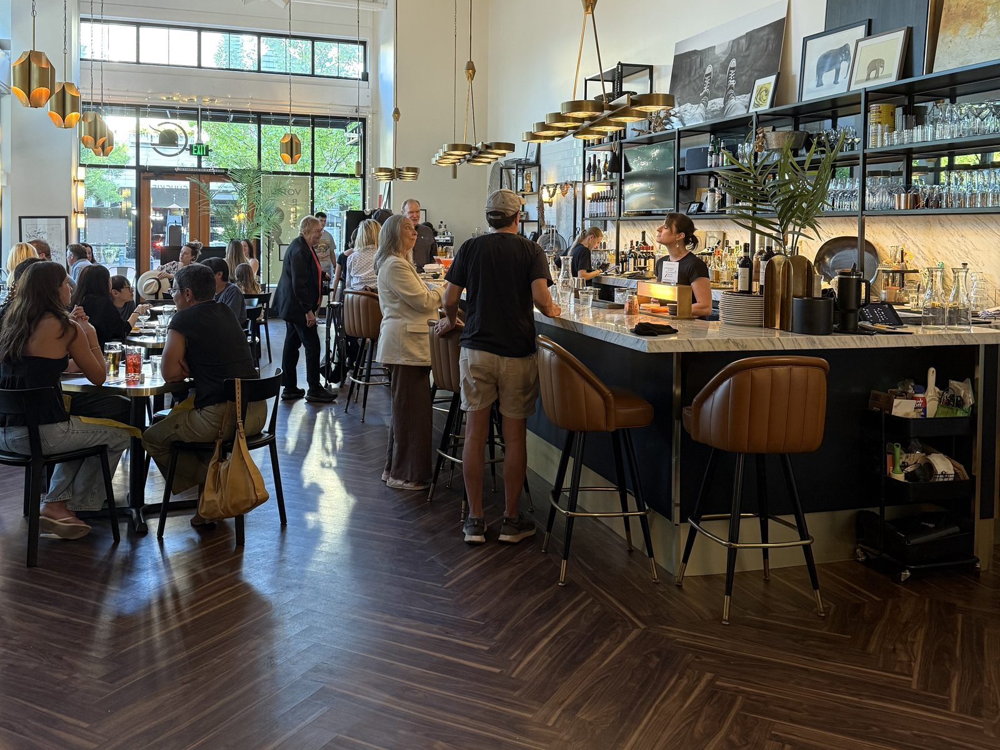

The Best Bolognese Since France, at Chuckie Pies

Chuckie Pies has been sitting on my bookmarked list since the twenty-sixth of July, and for a slightly stupid reason: I walked past it at midday on a Sunday food crawl through Lake Oswego and it was shut. It doesn't open until four. All I got that day was a look through the glass at an empty dining room and a yellow poster on the door telling me the place had been voted best pizza, which is a frustrating thing to read from outside a locked building.
So I came back on a Thursday evening, at the right hour this time, and sat outside on First Street with a ten-inch sausage pie in front of me. Here is the thing I did not expect to be writing: the pie was mine, and the dish I came away thinking about was the rigatoni Bolognese on the other side of the table.

The best Bolognese I've had since the south of France
That is the claim, and I want to be careful with it, because it is a big one and I don't hand it out. The Bolognese at Chuckie Pies is sixteen dollars, it is rigatoni rather than anything long and twirled, and the menu describes it with no ceremony at all: rigatoni and house meat sauce topped with parmesan and parsley. That's the whole entry. There is a small bowl of grated parmesan set down next to it and nothing else going on.
And it is the best pasta Bolognese I've had since I was in the south of France. Not the best in Lake Oswego, not the best at a pizza place — since France. I'd order it again over the pizza, and I say that as someone who came here specifically for pizza.

The ridges are doing real work here. A ragù this coarse would slide straight off spaghetti and end up as a pile at the bottom of the bowl; on rigatoni it catches in the grooves and gets pushed up inside the tubes, so every piece arrives loaded. Whoever decided the shape was paying attention.

What a ten-inch Neapolitan pie looks like here
The pizzas are ten inches, which is a personal pie and not a sharing one, and the menu is unusually straight with you about the method: 10" Neapolitan style pizzas featuring house dough. Simply topped then fired quickly in our wood oven, with a crisp, slightly charred crust and tender chewy interior. That is exactly what turns up. Mine was the Spicy Sausage Pie at eighteen dollars — tomato, mozzarella, Molinari fennel sausage in irregular crumbles rather than tidy discs, red pepper flake and parmesan — and the rim came out blonde and puffed with those dark leopard spots you only get from a floor that hot.

You can watch it happen, too. There are two wood-fired ovens behind the counter in cream tile, one of them lit, and the pass in front of them is stacked with boxes reading Neapolitan Uncomplicated — which is both a decent slogan and an accurate description of the food. The boxes also carry an old black-and-white photograph of a couple, captioned in handwriting as Esther and Chuckie Pie. Nobody explained who they were and I didn't ask, which I now regret.

The wine list is the actual surprise
I did not expect to spend time reading a wine list at a pizza place, and then I did. It is properly Italian — Barbera d'Alba and Barbera d'Asti, three tiers of Felsina Chianti including the Rancia in a 375ml, an Arneis, a Lambrusco listed honestly as slightly effervescent dry, red, and a Barbaresco at seventy dollars — with Oregon and Washington sitting alongside it rather than underneath it, Ayres and Lemelson pinot noir, a Woodward Canyon cab.
Two details on that list are worth more than the bottles. Corkage is ten dollars, which is generous. And there is a split size wine bottle for 2 section: 375ml of the Barbera d'Asti for twenty-one, the Chianti Classico for twenty-nine, an Oregon sparkling rosé in a 187ml for nine. Two people who want different things, or one glass more than a glass, and nobody has to commit to a whole bottle. More restaurants should do this.

Is Chuckie Pies worth going to in Lake Oswego?
Yes — and the room is part of the answer. The empty dining room I photographed through the glass in July was full by half past six on a Thursday: double-height ceiling with the ductwork left exposed and painted out white, dark walnut laid in a herringbone, brass pendants, a marble bar with tan leather stools and every one of them taken. It is a good-looking room that hasn't been made precious about itself, which is the same trick the food is doing.


The family has been at this since 2013 — Chuck and Lisa Shaw-Ryan, who say on their own site that they think of it as hosting a dinner party every night. That is the sort of line that usually means nothing. Here it survives contact with the evidence: a menu of three pastas and ten pies, no small plates arms race, and a wine list chosen by someone who enjoys wine.
Neapolitan Uncomplicated.
Four stars rather than five, and the reason is honest: the pie is good and the pasta is better, which is not what a place called Chuckie Pies is aiming for. If I could hand out a rating for a single dish, the Bolognese would have the fifth star on its own. But the meal is the unit, and the meal was very good rather than unimprovable. It is also, I only worked out afterwards, twenty street numbers from Artisserie at 350 — the two of them a few doors apart on the same block of First Street. A whole evening can be had here without moving the car.
Practical
- Where: 370 First Street, Lake Oswego, Oregon.
- Hours: Tuesday to Sunday, 4pm to 9pm — "9ish" on the door. Closed Mondays, and closed all day until four, which is the mistake I made the first time.
- Booking: reservations through Resy, online ordering at chuckiepies.com, phone 503.342.6207. We were outside on the patio by five on a Thursday; the inside was full by half six.
- Prices: pies $12–$20 (Marinara $12, Margherita $16, Spicy Sausage $18, Meatball and Bolognese $19, deep dish $20). Pasta $15–$16. Starters $9–$12, salads $12–$14, calzone $17, chicken parmesan $17. Gluten-free crust +$3.
- Order this: the Bolognese. Add a pie to share if there are two of you — ten inches is one person's dinner, not a table's.
- Drink: the split 375ml bottles if you're two, or the Barbera d'Asti by the glass at thirteen. Corkage $10 if you bring your own.